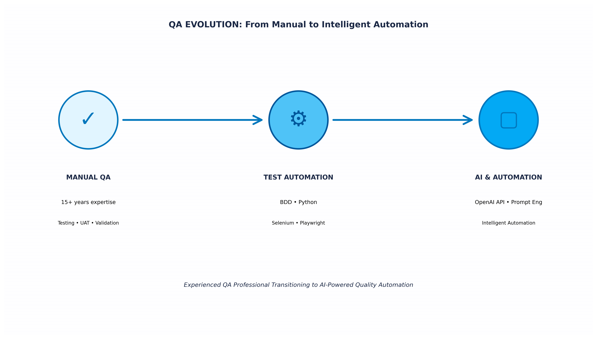

Hi, I'm Juliana. I'm a Senior QA Engineer with over 15 years of experience helping teams test and deliver reliable software across healthcare, insurance, airlines, and SaaS platforms.
Recently, I've been integrating Generative AI into my day-to-day testing workflows. As an ISTQB CT-GenAI certified tester, I design pipelines that automate repetitive test drafting, cutting creation time by around 80%. This gives engineering teams more room to focus on high-impact exploratory testing and shipping stable features.
Take a look at my featured AI testing pipeline below to see how it works in practice.
AI-Augmented Testing
ISTQB CT-GenAI certified. Hands-on experience developing prompt-engineered test generation pipelines using Claude & OpenAI APIs, DOM element extraction, BDD generation, and auto-healing retry logic.
QA Strategy & Governance
Deep experience with risk-based test design, Root Cause Analysis (RCA), defect lifecycle tracking in Azure DevOps and Jira, and preventing critical defect escapes across enterprise releases.
Engineering Leadership
Led cross-border QA teams across the Philippines and India. Proven track record establishing QA processes from scratch, mentoring junior engineers, and sitting on senior hiring panels.